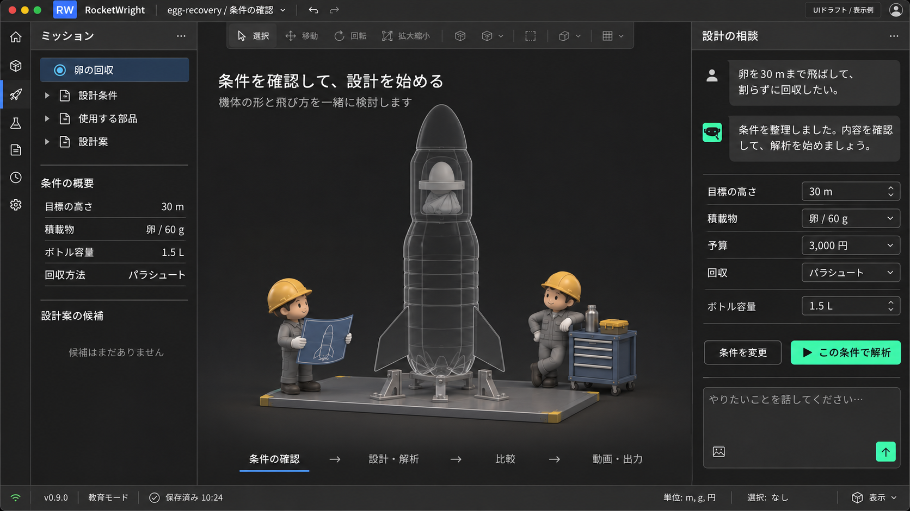
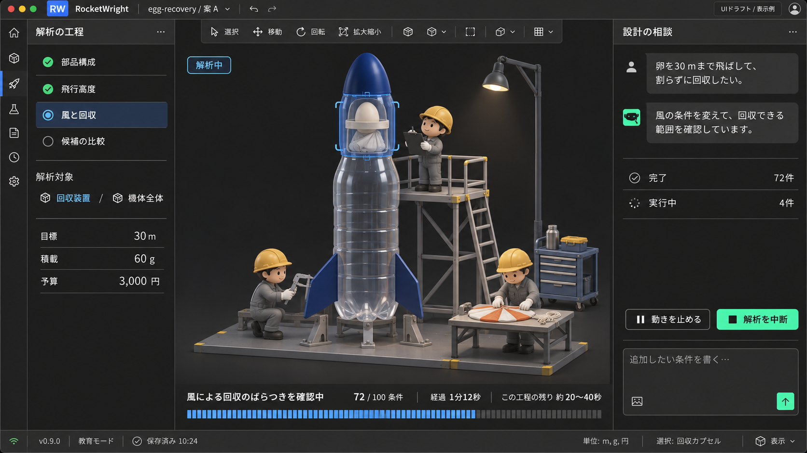
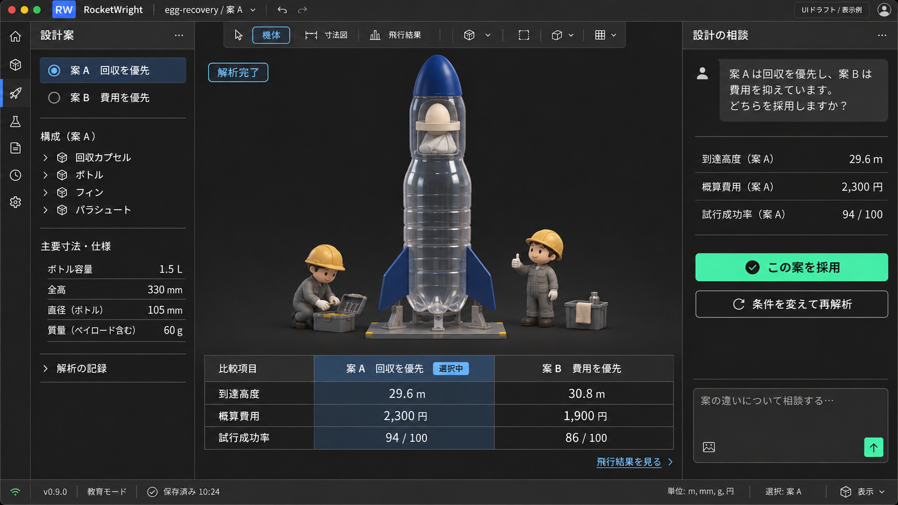
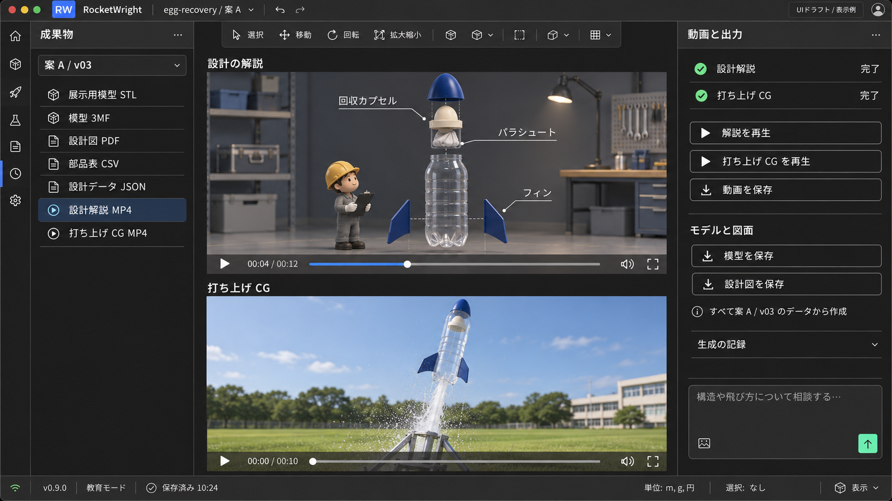
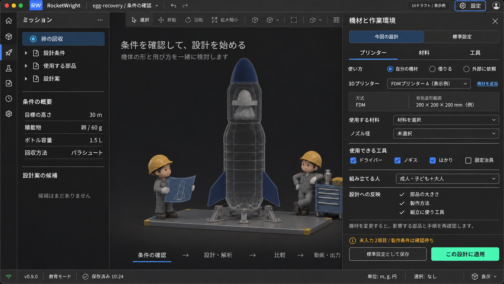
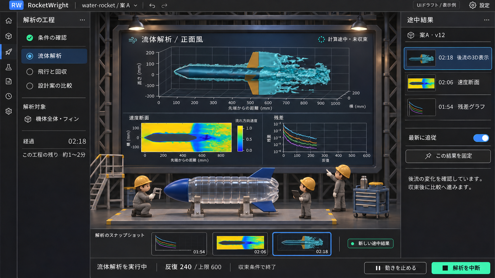

01 / 目的を伝え、条件を確認する
右の対話と条件フォームから始める。中央には機体の仮表示と、作業の開始を待つ整備員を置く。

02 / 解析対象と進捗を、整備員の動きで伝える
工程と対象部位を選択表示し、小さな整備員が点検する。解析内容・完了件数・経過時間・工程の残り時間を同じ場所にまとめる。

03 / 機体と結果を比べ、採用案を決める
足場が外れ、候補案の違いを共通の表で比較する。右から採用、条件変更、再解析へ進む。

04 / 設計解説と打ち上げCGを見て、成果物を保存する
採用した同じ設計案から、解説動画・打ち上げCG・展示用模型・図面をまとめて扱う。

05 / プリンター・材料・工具を設定から選ぶ
上部右の設定から機材パネルを開く。普段の標準設定と今回の設計条件を分け、必要な制約を構造化して渡す。

06 / 整備員の背後に、届いた解析結果を映す
背面の大型スクリーンで後流の3D表示・速度断面・残差を確認する。手前に機体と整備員、右と下に結果履歴を置き、最新への追従と表示の固定を選べるようにする。
